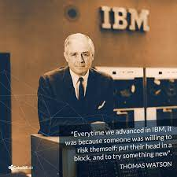

Mr. Watson was born in Campbell, New York, U.S. He was a pioneer in the development of accounting and computing equipment used today by business, government, science and industry. He built a worldwide industry during his 42 years at IBM. He worked his way up from a bookkeeper to general sales manager. Bent on inspiring the dispirited NCR sales force, Mr. Watson introduced the motto, "THINK," which later became a widely known symbol of IBM. For many years Mr. Watson served as a trustee of Columbia University and Lafayette College. He was presented with honorary degrees by 27 colleges and universities in the United States and four abroad.
| Born | February 17, 1874 |
| Died | June 19, 1956 |
| Occupation | Chairman and CEO of IBM 1914–1956 |
| Spouse | Jeanette M. Kittredge |
| Children | 4, including Thomas Watson Jr. and Arthur K. Watson |
| Nationality | American |
| Education | Columbia University |
| Awards | Order of the German Eagle, Silver Buffalo Award |